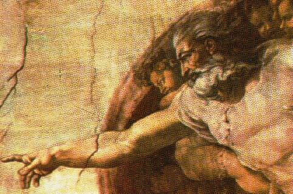
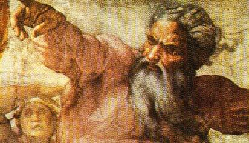
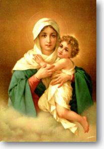
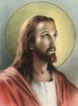

CONHECIMENTO DIVINO
Para sedimentar
nossas convicções em bases sólidas, é necessário aprofundar o conhecimento
penetrando até nas entrelinhas dos versículos da Sagrada Escritura,

com a intenção de entrar no pensamento do escritor
inspirado, buscando entender com clareza os ensinamentos Divinos,
a fim de que acompanhando a sequência do raciocínio, conseguirmos
também iluminar o nosso com um maior, melhor e mais profundo
conhecimento de DEUS.
O PAI ETERNO se
revela a humanidade pela
"Natureza"e
através da "Graça"
, mas também concede as
pessoas um Dom especial, a fim de que todos tenham um "natural conhecimento de DEUS".
Por meio da
Natureza
Todas as criaturas,
qualquer que seja a idade, condição de vida, profissão de fé, mostram
insensivelmente que seu espírito está voltado para DEUS. É uma
tendência natural e misteriosa que nos leva a imaginar que ocorre,
em virtude da Alma, que é invenção Divina, ter de alguma forma em
tempos anteriores, encontrado o SENHOR, possivelmente na época
em que ela foi criada, ou seja, naquele instante inesquecível após a sua
criação, quando recebe do PAI ETERNO a Graça Inicial, as virtudes e
dons, que constituem o
passaporte para a vida.
Para darmos
estrutura a este conceito, vamos acompanhar e tecer considerações
sobre o nascimento das pessoas. Qualquer criança entregue aos cuidados
da mãe, experimenta com indizível felicidade a ternura do carinho
materno, e mesmo sem compreender as manifestações amorosas que
acontecem, grava em sua memória o bem e a alegria que elas lhe
proporcionam.
E isto, sem nos
esquecermos, o amor que existe entre uma mãe e um filho ou filha,
não é um amor absoluto, é um amor relativo. Porque entre os seres
humanos há que se considerar a presença permanente dos fatores
negativos, representados pelo cansaço, impaciência, falta de caridade,
nervosismo e outros, os quais não permitem, por parte da mãe, uma
entrega total e constante a sua criança, apesar de amá-la. Em
palavras mais diretas, podemos afirmar que nenhum ser humano, por
mais educado, polido e responsável que seja, está sempre de bom
humor, pronto para servir e amar, isto porque, todas as pessoas
no cotidiano manifestam nervosismo, impaciências e cacoetes.
Isto é normal e faz parte da vida.

Por outro lado, a criança "chamada" pela mãe através dos carinhos, possui a capacidade de
ter os seus instintos despertados para "responder" a todos os impulsos afetuosos maternos, pelo fato da
criança ser o filho que ela gerou. A alimentação por ela dispensada
sem o conhecimento consciente do filho que apenas recebe, assim
como os cuidados necessários ao bom tratamento da criança, como
todas as formas de afeto, inclusive a sua própria doação de mãe,
colocam em evidência como alguém que "chama" o filho para o amor.
Todavia, diante
do filho que ela deu à luz, a mãe sabe perfeitamente que embora sendo
carne de sua carne, sangue de seu sangue, não pode considerá-lo como
sendo obra de seu amor, porque a criança possui uma Alma que lhe dá
a vida. Pelo matrimônio ela colaborou no Plano Divino, encomendando
o filho junto com seu esposo, gerando-o em seu ventre. Mas a Alma
vem de DEUS. Então na verdade, seu filho não é obra sua, mas
obra DAQUELE que lhe deu a vida.
Da mesma forma,
todas as virtudes maternas manifestadas, traduzidas pelos carinhos
e atenções dispensadas ao filho, que representam concretamente um
"chamamento" ao amor, também não são propriedades sua,
ou seja, não são propriedades da mãe, são dons espirituais que lhe foram
dados por empréstimo, por AQUELE que é a Fonte dos Dons, o Autor da
Vida e do Amor - DEUS .
Sendo a Alma,
criatura de DEUS, dotada de carismas especiais, guarda sempre uma
lembrança do CRIADOR, uma recordação da Fonte Divina que lhe
propiciou a existência, da mesma maneira como preserva os dons que
recebeu. Então na verdade aquele ato criador foi uma primeira
manifestação do Amor de DEUS em relação a cada pessoa individualmente
e por conseguinte, é o nosso
"Primeiro Amor", uma paixão
sincera, desmedida e agradecida de nosso espírito por AQUELE que
lhe deu a vida e por isso mesmo, sente-se naturalmente impulsionada
e atraída para ELE.
Aprofundando
nas considerações, observamos que há um período, ou seja, existe um
espaço 
de tempo, entre o nascimento de uma criança
e o seu primeiro ato racional. Neste pequeno intervalo, ela age por instinto,
agradecendo com sorrisos, os carinhos e sorrisos que recebe de seus
pais. Da mesma forma, na criação, existe um espaço de tempo entre
a realidade de uma pessoa (a formação de seu espírito) e sua percepção
de modo consciente do
"chamado" Divino
à vida, muito embora, durante este lapso de tempo, a alma criada
já possua um relacionamento com DEUS, pois ela é
sua criatura.
Convencionou-se
chamar de "âmbito da
natureza" , esse espaço
de tempo (por menor que seja), que antecede ao relacionamento definitivo
da criatura com o CRIADOR, assim como os atos realizados neste período
são denominados de "atos
do conhecimento natural e do amor natural de DEUS".
Então
compreendemos que no
"âmbito da natureza",
embora inconscientemente por parte da criatura, existe um relacionamento
amoroso entre DEUS e cada ser que ELE cria, um amor profundo que
grava indelevelmente na memória das pessoas a lembrança do DEUS CRIADOR.
Razão porque o espírito tem uma tendência natural de estar voltado para
o PAI , muito embora, na prática, na maioria dos casos, o comportamento
humano no cotidiano, seja repleto de defeitos e imperfeições, revelando um total
esquecimento dessa verdade. E mais grave ainda, a violência e as transgressões
campeiam tão livremente, que atestam de modo assustador o procedimento
ao contrário, ou seja, um efetivo distanciamento de DEUS pelas gerações
de nosso tempo.
Através da
Graça
A criatura ao ser
colocada no mundo, não representa um ato isolado e acabado, porque DEUS
cria a Alma para formar cada pessoa, ao mesmo tempo que a
"chama" para o amor e não se "esquece" dela, está sempre disponível para acolher
suas invocações, suas súplicas e manifestações de amor. Isso acontece,
apesar do PAI ETERNO dar a humanidade total liberdade de movimentos,
pensamentos e ações, não interferindo e nem mesmo impondo a sua Divina
Vontade, a fim de que cada ser escolha livremente o caminho que melhor
lhe aprouver.
Por sua vez, a criatura
sendo a imagem e semelhança do CRIADOR, sempre é levada pelos seus
sentimentos e virtudes, a perceber as suas origens, muito embora lhe seja
impossível suspender o processo de sua saída do seio Divino, freiando o
curso natural da criação e retornar ao PAI ETERNO, de onde procede,
para gozar do conhecimento e do amor Divino, a fim de viver intensamente
o seu "Primeiro Amor", abraçando-O e amando-O com todas as suas
potencialidades. O espírito tem a convicção de sua origem, mas sabe que não
pode alcança-la por sua própria vontade, por essa razão, conforma-se em
apenas guardar uma espécie de inesquecível e terna recordação
daquele momento maravilhoso.

Assim, o PAI ETERNO
cria as pessoas concedendo-lhes um espírito que lhes dá a vida, num primeiro
ato de amor. Num segundo ato,
"chama" a criatura à
santidade, infundindo-lhe a
"Graça Divina", para
que ela possa percebe-LO e decida manter-se unida a ELE. E é importante
esclarecer que o chamamento Divino é um convite constante e permanente,
buscando a compreensão e o discernimento de cada pessoa, que deve estar
apta a "responder"
vivendo em santidade, esforçando-se
para agir conforme a Santíssima Vontade do SENHOR, demonstrando
amizade, agradecimento e reconhecimento sincero ao Amor de DEUS,
pela imensidão de graças recebidas e pelo dom da própria vida.
Na verdade, a relação
"criatura-CRIADOR"
se completa de modo admirável pelo caminho
da "Graça", no sentido de que ela dá ao ser criado uma
misteriosa participação na Natureza Divina. Podemos afirmar, que é uma
incorporação da pessoa à área do PAI ETERNO, ou melhor, sua junção,
sua união à esfera do CRIADOR, de tal forma, que tendo o ser humano
uma correta maneira de viver e pensar, envolvido pela "Graça de DEUS", será possível estabelecer uma fecunda
relação pessoal recíproca entre ele e o SENHOR.
Esta realidade nos
leva à considerar que o conhecimento de DEUS acontece de modo mais
completo e perfeito, através da
"Graça". Porque
sem dúvida, somente pela
"Graça" a criatura
estará capacitada a receber a revelação de um amor sublime e infinito
que vem de DEUS, muito embora, por causa das próprias limitações humanas,
as pessoas não conseguem percebê-la e usufruí-la de maneira completa e em
todas as suas dimensões.
Confirmando este
fato, no Mistério de Redenção
da humanidade, vemos de modo
incompreensível ao nosso entendimento, o DEUS ETERNO e absoluto,
abaixar-se ao nível das criaturas, encarnar-se no meio delas, viver
com elas como um verdadeiro homem, menos no pecado, para ensiná-las,
educa-las com suas palavras e exemplo, aceitando morrer pregado numa
Cruz para redimir-nos perante o CRIADOR, numa demonstração suprema
de obediência ao PAI ETERNO e de amor infinito a humanidade. Uma
demonstração de amor incomensurável, tão ilimitado, que a mente humana
não tem capacidade para avaliar a sua grandeza e apreciar o maravilhoso
e extraordinário benefício que o FILHO DE DEUS proporcionou à
todas gerações!
Assim, no
relacionamento "criatura -
CRIADOR", a resposta
da pessoa só será dada corretamente, quando ela cultivar uma fé honesta
e procurar entender o Mistério Divino: JESUS CRISTO é o FILHO DE
DEUS, a Segunda Pessoa da Santíssima Trindade, que veio até nós num
gesto de extremoso amor; assumiu todos os pecados do mundo, os que
tinham acontecido no passado, aqueles que ocorriam no presente, naquela
época, e os pecados que seriam cometidos pelas gerações futuras, num
impressionante "Mistério
de Amor", para nos libertar
do poder do maligno, neutralizando a ação do Pecado Original e justificando
todas as gerações perante o PAI ETERNO. Completando a Sua Divina Obra,
objetivando a santificação da humanidade, deixou-nos os Sacramentos que
realizam a união das pessoas com DEUS, santificando a existência da
humanidade, "mesmo
aqui no exílio", repetindo
a expressão de Santa Terezinha do Menino Jesus, referindo-se ao tempo
de nossa vida, enquanto cumprimos a missão existencial.
Entretanto,
lembrando que a humanidade não tem persistência no caminho do direito, da
 justiça e do amor fraterno, torna-se difícil estabelecer uma relação rígida
entre o "chamado"
de DEUS e a "resposta"
da criatura. O binômio "chamado
- resposta", por certo há de
suscitar uma grande discussão que envolve a razão e o coração das pessoas.
A razão sempre indica a direção certa a ser seguida pelo comportamento moral,
mas o coração, envolvido pelas fraquezas e tendências humanas, pode desviar
as pessoas dando-lhes outro rumo. Em consequência, nasce uma dialética na
pergunta, de como pode um ser finito como são todas as criaturas, corresponder
a exigência de um amor infinito que vem de DEUS ?
justiça e do amor fraterno, torna-se difícil estabelecer uma relação rígida
entre o "chamado"
de DEUS e a "resposta"
da criatura. O binômio "chamado
- resposta", por certo há de
suscitar uma grande discussão que envolve a razão e o coração das pessoas.
A razão sempre indica a direção certa a ser seguida pelo comportamento moral,
mas o coração, envolvido pelas fraquezas e tendências humanas, pode desviar
as pessoas dando-lhes outro rumo. Em consequência, nasce uma dialética na
pergunta, de como pode um ser finito como são todas as criaturas, corresponder
a exigência de um amor infinito que vem de DEUS ?
Sem dúvida, ele há de malograr e não conseguirá o seu objetivo, enquanto
depender somente das pessoas. Este
"chamado - resposta"
verdadeiramente só funcionará se o SENHOR no momento do "chamado" conceder às criaturas "aptidão"
para percebe-lo, pois só assim o espírito
humano será sensibilizado e terá condições de "responder" ao
chamado do CRIADOR. Essa "aptidão"
é a ação da "Graça"
que o SENHOR concede a cada um.
Para um exato
entendimento do que significa "chamado
de DEUS" e "resposta humana", ao primeiro
denominamos de "vocação"
, que é um Dom dado pelo SENHOR
à todas as pessoas, a fim de que realizem seus projetos e cumpram com santidade
a missão da vida e primordialmente,
"não se esqueçam DELE".
A criatura de posse do "chamado"
fica predisposta à "responder" através de manifestações que atestem o seu amor e sua atenção a DEUS.
Em outras palavras, o chamado Divino, é um espontâneo e eterno convite do
CRIADOR à humanidade, um chamado permanente e carinhoso, endereçado
à todas as gerações, para o cultivo de um fervoroso, sincero e honesto amor a
DEUS e ao próximo, representado pelo cultivo da caridade, da piedade e de
todas as formas de adoração e louvor ao SENHOR, através das orações no
trabalho, no lazer e no lar.

 Próxima Página
Próxima Página
Página Anterior
Retorna ao Índice